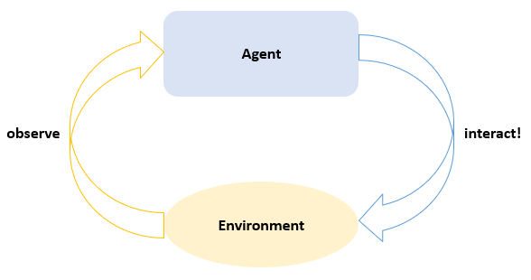

Overview
Before diving into details, let's review some basic concepts in RL(Reinforcement Learning) first. Then we'll gradually introduce the relationship between those concepts and our implementations in this package.
Key Concepts
Agent and Environment

Generally speaking, RL is to learn how to take actions so as to maximize a numerical reward. Two core concepts in RL are Agent and Environment. In each step, the agent is provided with some observation of the environment and is required to take an action. Then the environment takes in that action and transites to another state, providing a numerical reward in the meantime.
In our package, Agent is an abstract type of AbstractAgent. And Environment is an abstract type of AbstractEnvironment provided in another package named ReinforcementLearningEnvironments.jl. We can observe an environment to get an Observation and interact! with an environment using an action. Usually, agents and environments are functional objects. So we can use the piping operator (|>) to simulate the steps implied in the above picture: env |> observe |> agent |> env. See Agents and Environments for more some concrete implementations.

For multi-agent environments, an AgentManager is introduced to manage the interactions between agents and environments (for now it's just a Tuple).
Now let's take a closer look at Agent:

This is a typical hierarchical chart of different components. After getting an Observation from the envrionment, the Agents use it to fill Buffers and update Environment Models and Policies. A policy is used to generate an action given an Observation. Usually a policy contains Learners to decide how to update internal Approximators. A typical approximator is NeuralNetworkQ, which uses neural networks to approximator state-action values.
Notice that different components may have different implementations, so some steps are optional. Anyway, this picture should give you a perceptual knowledge of how those components are organized. You can move on and read the introduction of each components for more details.